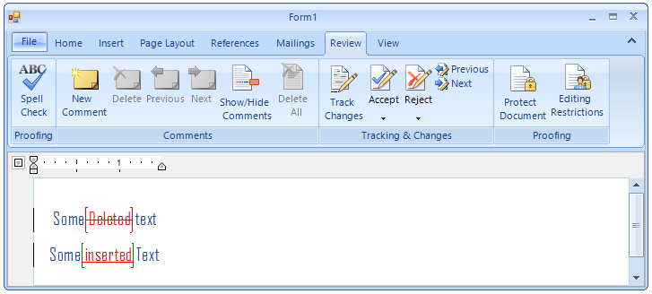

Track Changes
Track Changes is a way for RadRichTextEditor to keep track of the changes you make to a document.
You can then choose to accept or reject those changes.
Activating Track Changes
You can activate change tracking through the IsTrackChangesEnabled property of RadRichTextEditor:
__[C#] __
this.radRichTextEditor1.IsTrackChangesEnabled = true;
__[VB.NET] __
Me.radRichTextEditor1.IsTrackChangesEnabled = True
'#End Region
'#Region "options"
Me.radRichTextEditor1.RichTextBoxElement.TrackChangesOptions.Insert.Decoration = RevisionDecoration.ColorOnly
Me.radRichTextEditor1.RichTextBoxElement.TrackChangesOptions.Insert.ColorOptions = New RevisionColor(Color.Green)
Me.radRichTextEditor1.RichTextBoxElement.TrackChangesOptions.Delete.Decoration = RevisionDecoration.Underline
Me.radRichTextEditor1.RichTextBoxElement.TrackChangesOptions.Delete.ColorOptions = New RevisionColor(Color.Orange)
Me.radRichTextEditor1.RichTextBoxElement.TrackChangesOptions.ChangedLinesDecorationColorOptions.ColorOptions = New RevisionColor(Color.Red)
'#End Region
'#Region "user"
Me.radRichTextEditor1.CurrentUser = New UserInfo("Group", "Boby", "Boby", "bobby@telerik.com")
'#End Region
Dim document = Me.radRichTextEditor1.Document
'#Region "revision"
Dim prev As Revision = document.GoToPreviousRevision()
Dim [next] As Revision = document.GoToNextRevision()
Dim getCurrent As Revision = document.GetCurrentRevision()
Dim getPrev As Revision = document.GetPreviousRevision()
Dim getNext As Revision = document.GetNextRevision()
Dim all As IEnumerable(Of Revision) = document.GetAllRevisions()
'#End Region
End Sub
End Class
When change tracking is enabled all changes made in the document will be tracked. This includes:
adding and removing text;
formatting changes of the document elements;
adding and removing images, hyperlinks, tables, etc.
Customizing Changes Visualization
As you can see tracked changes are visualized inside the rich text box with different colors.
You can modify these colors by using the TrackChangesOptions property of RadRichTextEditor.
Here is for example how to customize the look of the tracked changes so that insertions are shown in green,
deletions are shown in underlined orange and the vertical line indicating changes is red:
__[C#] __
this.radRichTextEditor1.RichTextBoxElement.TrackChangesOptions.Insert.Decoration = RevisionDecoration.ColorOnly;
this.radRichTextEditor1.RichTextBoxElement.TrackChangesOptions.Insert.ColorOptions = new RevisionColor(Color.Green);
this.radRichTextEditor1.RichTextBoxElement.TrackChangesOptions.Delete.Decoration = RevisionDecoration.Underline;
this.radRichTextEditor1.RichTextBoxElement.TrackChangesOptions.Delete.ColorOptions = new RevisionColor(Color.Orange);
this.radRichTextEditor1.RichTextBoxElement.TrackChangesOptions.ChangedLinesDecorationColorOptions.ColorOptions = new RevisionColor(Color.Red);
__[VB.NET] __
Me.radRichTextEditor1.RichTextBoxElement.TrackChangesOptions.Insert.Decoration = RevisionDecoration.ColorOnly
Me.radRichTextEditor1.RichTextBoxElement.TrackChangesOptions.Insert.ColorOptions = New RevisionColor(Color.Green)
Me.radRichTextEditor1.RichTextBoxElement.TrackChangesOptions.Delete.Decoration = RevisionDecoration.Underline
Me.radRichTextEditor1.RichTextBoxElement.TrackChangesOptions.Delete.ColorOptions = New RevisionColor(Color.Orange)
Me.radRichTextEditor1.RichTextBoxElement.TrackChangesOptions.ChangedLinesDecorationColorOptions.ColorOptions = New RevisionColor(Color.Red)
'#End Region
'#Region "user"
Me.radRichTextEditor1.CurrentUser = New UserInfo("Group", "Boby", "Boby", "bobby@telerik.com")
'#End Region
Dim document = Me.radRichTextEditor1.Document
'#Region "revision"
Dim prev As Revision = document.GoToPreviousRevision()
Dim [next] As Revision = document.GoToNextRevision()
Dim getCurrent As Revision = document.GetCurrentRevision()
Dim getPrev As Revision = document.GetPreviousRevision()
Dim getNext As Revision = document.GetNextRevision()
Dim all As IEnumerable(Of Revision) = document.GetAllRevisions()
'#End Region
End Sub
End Class
The result is:
Changing Current User
All changes made while track changes are enabled are made on behalf of the current user. The current user can be changed by setting the CurrentUser
property of the RadRichTextEditor:
__[C#] __
this.radRichTextEditor1.CurrentUser = new UserInfo("Group", "Boby", "Boby", "bobby@telerik.com");
__[VB.NET] __
Me.radRichTextEditor1.CurrentUser = New UserInfo("Group", "Boby", "Boby", "bobby@telerik.com")
'#End Region
Dim document = Me.radRichTextEditor1.Document
'#Region "revision"
Dim prev As Revision = document.GoToPreviousRevision()
Dim [next] As Revision = document.GoToNextRevision()
Dim getCurrent As Revision = document.GetCurrentRevision()
Dim getPrev As Revision = document.GetPreviousRevision()
Dim getNext As Revision = document.GetNextRevision()
Dim all As IEnumerable(Of Revision) = document.GetAllRevisions()
'#End Region
End Sub
End Class
Here is the result:
By default, insert and delete changes by different authors will be displayed in different colors. This can be changed through the
TrackChangesOptions as described in the previous section.
Navigating through changes
RadDocument provides a set of methods for navigating and getting revisions – a special class containing information for a single change in the document.
Revisions can be one of these 3 types:
Structure – Inserted or deleted text.
Formatting – A change in the properties of a document element.
Table – added or removed table rows.
All revision have a RevisionInfo object associated to them, which contains information about the user who made the change and the date and
time it was made. Revisions in the document can be accessed and selected with the following methods of RadDocument:
__[C#] __
Revision prev = document.GoToPreviousRevision();
Revision next = document.GoToNextRevision();
Revision getCurrent = document.GetCurrentRevision();
Revision getPrev = document.GetPreviousRevision();
Revision getNext = document.GetNextRevision();
IEnumerable<Revision> all = document.GetAllRevisions();
__[VB.NET] __
Dim prev As Revision = document.GoToPreviousRevision()
Dim [next] As Revision = document.GoToNextRevision()
Dim getCurrent As Revision = document.GetCurrentRevision()
Dim getPrev As Revision = document.GetPreviousRevision()
Dim getNext As Revision = document.GetNextRevision()
Dim all As IEnumerable(Of Revision) = document.GetAllRevisions()
'#End Region
End Sub
End Class